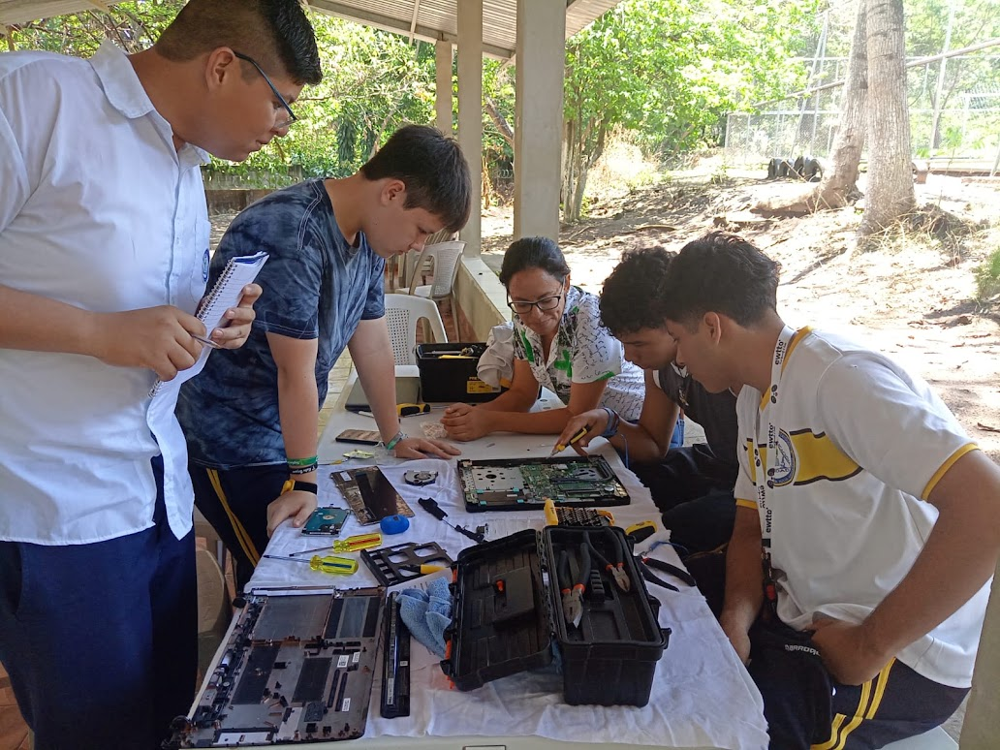
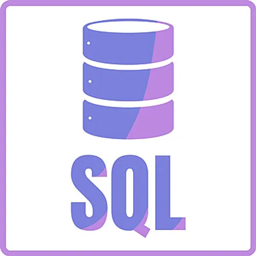
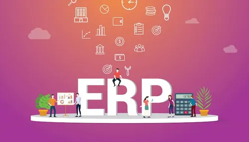
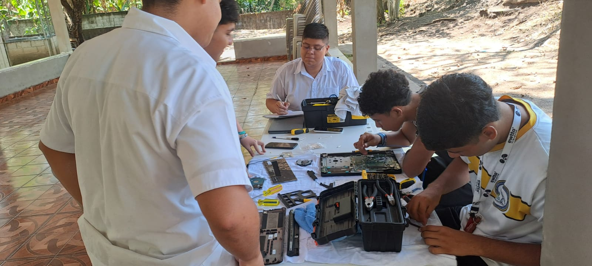

BACHILLERATO TÉCNICO · TERCER AÑO
3 ITSI WEBSITE
Bienvenidos a la especialidad de Infraestructura Tecnológica y Servicios Informáticos.
Este es el sitio oficial para la especialidad en la que encontrarás información especializada en los módulos de tercer año y algunos recursos.
Conocer los módulos
8módulos de especialidad
1,200horas de formación
40semanas de estudio
¿QUÉ ESTUDIAMOS?
¿Qué es ITSI?
ITSI significa Infraestructura Tecnológica y Servicios Informáticos. En esta especialidad aprendemos a instalar, administrar y dar soporte a los equipos, las redes y los sistemas que usan las organizaciones.
En tercer año vemos bases de datos, sistemas empresariales, centros de datos, auditoría y servicios de red. También hacemos un proyecto para aplicar lo aprendido.
TERCER AÑO
Módulos de la especialidad
Estos son los módulos que estudiamos en tercer año de ITSI.
Gestión de bases de datos
Organizamos, consultamos y protegemos información en bases de datos.

Módulo 2Soporte a sistemas empresariales (ERP)
Damos soporte a sistemas que ayudan a administrar una empresa.

Módulo 3Operación y monitoreo de centros de datos
Revisamos equipos, alertas y el funcionamiento de los servicios.

Módulo 4Gestión de servicios de red y aplicaciones empresariales
Mantenemos disponibles los servicios de red y las aplicaciones.
Módulo 5Auditoría de sistemas de información
Revisamos sistemas y proponemos mejoras para su uso seguro.
Módulo 6Conversación en inglés sobre auditoría
Practicamos inglés con temas de auditoría y centros de datos.
Módulo 7Puesta en marcha de la microempresa
Organizamos en equipo una idea de negocio y sus actividades.
Módulo 8 · ProyectoProyecto tecnológico integrador
Desarrollamos una idea relacionada con lo aprendido en la especialidad.
HERRAMIENTAS DE CLASE
Programas para practicar
Enlaces a los sitios oficiales. Revisa los requisitos y elige la versión adecuada para tu equipo; algunos programas requieren crear una cuenta.
Sistemas operativos y máquinas virtuales
Windows Server 2025 ISO Evaluación oficial ↗ Windows 10 22H2 Descarga oficial ↗ Oracle VirtualBox Descarga oficial ↗Bases de datos
Microsoft SQL Server Descarga oficial ↗ SQL Server Management Studio Instalador oficial ↗ PostgreSQL para Windows Descarga oficial ↗Sistemas empresariales
Odoo Community Descarga oficial ↗Redes y laboratorios
Cisco Packet Tracer Centro de descargas ↗ Wireshark Descarga oficial ↗Auditoría y diagnóstico
Microsoft Sysinternals Suite Herramientas oficiales ↗ Nmap Descarga oficial ↗Monitoreo
Grafana OSS Descarga oficial ↗ Prometheus Descarga oficial ↗Windows Server se ofrece como evaluación por 180 días. Windows 10 terminó su soporte el 14 de octubre de 2025; úsalo solo en una máquina virtual aislada para prácticas y no para navegar ni guardar información personal. Escanea únicamente redes de laboratorio con autorización.
LO QUE APRENDEMOS, LO PONEMOS EN PRÁCTICA
Proyecto final
Cada equipo puede elegir y desarrollar un proyecto propio, relacionado con lo aprendido durante los tres años de la especialidad.
Ver módulo 3.8